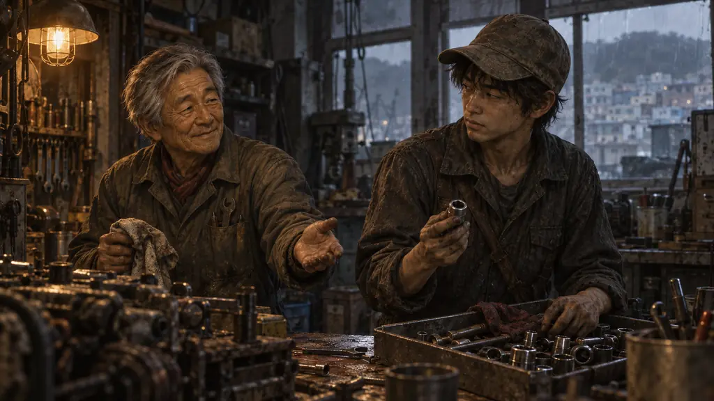
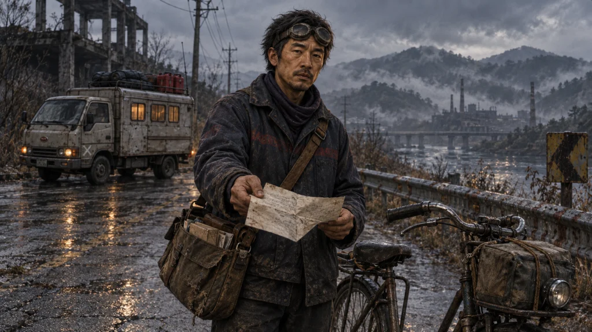

할아버지와 작업하던 날
열두 밀리 복스를 찾을 때면,
서로 마지막으로 쓴 사람을 탓하곤 했다.
기억은 내가 펼쳐 보고, 현재 사건은 먼저 알아차린다.
공구함 뚜껑에 손을 얹었다.
문득, 익숙한 목소리가 떠올랐다.
열두 밀리 복스를 찾을 때면,
서로 마지막으로 쓴 사람을 탓하곤 했다.

할아버지가 아직 작업대에 서 있던 때다.
나는 옆에서 공구를 찾아 건넸다.
“열두 밀리 복스 줘.”
나“이거 열셋인데.”
할아버지“그럼 열두 밀리를 네가 또 아무 데나 뒀다는 뜻이지.”
길 위의 단서가 먼저 보이고, 달구지가 속도를 줄인 뒤 이야기가 열린다.
사건의 결과나 보상은 미리 보여주지 않는다.

“주소가 다 무너져서,
이젠 이름이랑 얼굴로 배달합니다.”